Welcome to WaniCTF 2024 !
WaniCTF is a CTF event organized by Wani Hackase, the Osaka University CTF club, aimed at beginners to intermediate level participants.
CTF is a cyber security competition that involves testing one's knowledge and skills in vulnerability identification and attack techniques, based on computer science and programming.
WaniCTF follows a Jeopardy-style quiz format, where the participants must find a string of characters called a "flag," hidden within each challenge, and submit it to the score server to earn points.
Even those who are new to CTF or have only participated a few times can enjoy the event, as the difficulty level is designed to be accommodating. Moreover, to enhance the educational value of the competition, certain instructions and necessary tools are provided. Please make use of these resources while attempting the challenges.
Participation is free and open to everyone. To register, please create an account on the Register page of the score server.
Time (JST)
2024/6/21(Fri) 21:00 ~ 2024/6/23(Sun) 21:00
Registration
Discord
Rules
Please participate in teams, register one account per team. Solo participants are welcome.
The challenges are presented in the following six categories:
- Crypto
- Forensics
- Pwn
- Reversing
- Web
- Misc
You can earn points by finding the hidden flag in each challenge and submitting it to the score server.
The flag format is FLAG{[0-9a-zA-Z_\-\.\$@!\?]+} unless otherwise specified in each challenge.
The source code distributed in the challenge includes FAKE{[0-9a-zA-Z_\-\.\$@!\?]+} as a false flag. Submitting a false flag will not earn any points.
The number of points that can be earned in each challenge varies depending on the number of correct answers. (Challenges with fewer correct answers are worth more points.)
The rank is determined by the total number of points earned. In case of a tie, the participant who achieved that score first will be ranked higher.
Prohibited Actions
The following actions are strictly prohibited. Participants who engage in these actions will be disqualified and denied access to the server.
- Sharing solutions or hints with other participants during the competition.
- Interfering with other participants.
- Attacking the score server.
- Submitting numerous flags to the score server through brute-force methods.
- Overloading the challenge server with excessive traffic.
- Participating with multiple accounts.
Inquiry
You can contact the administrator on the Support page of the score server and in the #support channel on Discord.
However, we do not answer questions regarding the solution to challenges or technical issues of participants.
Inquiries on Discord will be handled by creating a private channel individually. Please make a statement in the #support channel that you need to make an inquiry.
Additional Notes
To facilitate communication among participants and announcements by the organizers, we will open a Discord server (participation is not mandatory).
The organizers will make announcements via the Notification page on the score server and the #notification channel on Discord.
If the score difference between the correct answers of each challenge is not appropriate, the organizers will change the calculation parameters during the competition.
After the end of the competition, we will publish the source code and expected solutions for each challenge on GitHub. We will keep the scoreboard and challenge server open for one week, using some inexpensive instances.
On the last day of the competition, we will conduct a survey. We would appreciate it if you could respond to it.
Recruitment of New Club Members
Wani Hackase is constantly seeking new members throughout the year, from students and faculty members affiliated with Osaka University. For more details, please refer to the Wani Hackase website at https://wanictf.org/about/ .
Past Events
WaniCTF 2023
2023/5/4 ~ 2023/5/6
WaniCTF 2021
2021/11/5 ~ 2021/11/7
WaniCTF'21-spring
2021/4/30 ~ 2021/5/2
WaniCTF 2020
2020/11/21 ~ 2020/11/23